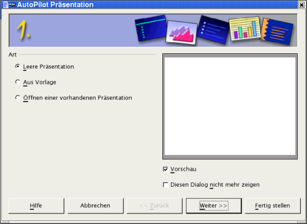
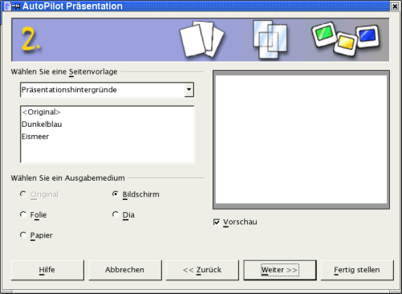
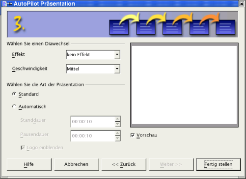
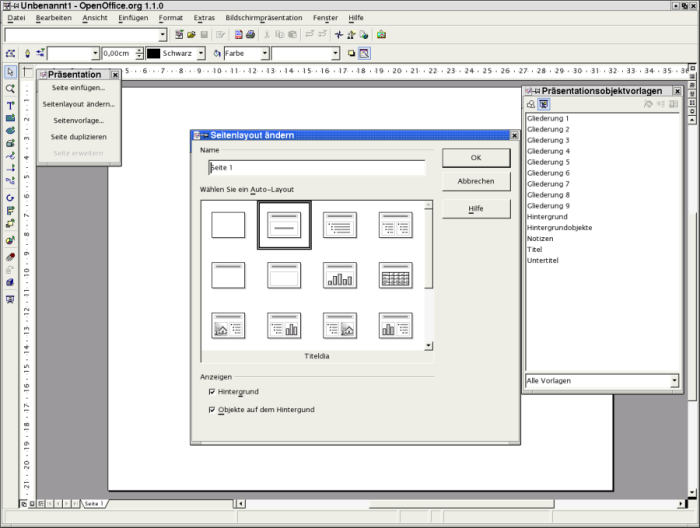
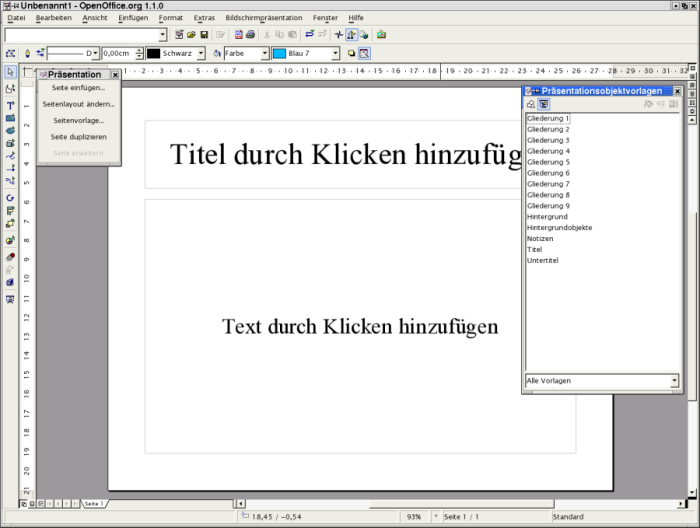

| [zurück] | [Hauptmenü] | -->[weiter] |
| [PDF] | ||
Erste Schritte in OpenOffice.org Impress
Wie einfache Präsentationen erstellt werden
Über dieses Dokument
Diese Anleitung soll Ihnen anhand eines kleinen Beispiels einen ersten Eindruck der Fähigkeiten von Impress vermitteln. Vorausgesetzt wird, dass Sie bereits Erfahrungen im Umgang mit Ihrer Systemumgebung (z. B. Windows, Linux mit grafischer Benutzeroberfläche) gesammelt haben. Auch kann hier nicht im Detail auf die einzelnen Menüs und Schaltflächen sowie die Konfiguration von OpenOffice.org eingegangen werden. Eine ausführliche Information finden Sie dazu in dem Dokument „Erste Schritte in OpenOffice.org Writer“.
Für die Arbeit mit diesem Dokument sollten Sie etwa eine Stunde einkalkulieren. Sie werden im Anschluss daran in der Lage sein, mit OpenOffice.org Impress eine einfache Präsentation zu erstellen.
Es ist nicht möglich, Ihnen hier Gestaltungskriterien für gute Präsentationen zu vermitteln. Dies würde den Rahmen dieses Dokumentes der Reihe „Erste Schritte“ sprengen.
Start der ersten Präsentation
Starten Sie das Programm mit der Auswahl von Präsentation in der Programmgruppe OpenOffice.org (oder OpenOffice.org Impress unter KDE) im Start-Menü.
Es erscheint dann der Autopilot von OpenOffice.org Impress. Mit ihm erstellen Sie nun die Grundlagen für Ihre erste Präsentation. Der Autopilot ist ein Assistent, der Sie durch einige Fragen leitet und Ihnen so hilft, mit ein paar Mausklicks das Grundgerüst einer Präsentation zu erstellen.
|
|
Sie können den automatischen Start des Autopiloten beim Beginn einer neuen Präsentation unterbinden. Starten Sie hierzu OpenOffice.org. Über das Menü Extras (in der Leiste unterhalb der blauen Fensterdekoration) und dort den Menüpunkt Optionen gelangen Sie zu einem Dialogfenster. Dort wählen Sie „Präsentation“ - „Allgemein“ aus und entfernen unter „Neues Dokument“ den Haken in der Checkbox vor „Mit Autopiloten starten“. |

Abbildung
1: Autopilot Schritt 1
Da Sie noch keine Präsentation erstellt haben, wählen Sie hier eine „Leere Präsentation“ aus. Später können Sie hier auch auf bereits erstellte Vorlagen zurückgreifen.
Bestätigen Sie Ihre Auswahl mit „Weiter“.
Es erscheint folgende Auswahlmaske:

Abbildung
2: Autopilot Schritt 2
Hier treffen Sie auch die Entscheidung, für welches Medium Sie die Präsentation erstellen wollen. Erstellen Sie für den Anfang eine Präsentation für den „Bildschirm“. Übernehmen Sie daher die Vorbelegung mit „Weiter“.
|
|
Eine Präsentation für den Bildschirm müssen Sie auch wählen, wenn Sie das Bild über einen Beamer auf eine Leinwand projizieren wollen. |
Auf dieser dritten Autopilot-Seite wählen
Sie aus, ob und wie ein Wechsel der Bildschirmbilder erfolgt.

Abbildung
3: Autopilot Schritt 3
Sie können zum Beispiel festlegen, ob der Austausch der Bildschirminformation durch Überblenden von links oben erfolgen soll. Schauen Sie sich doch einmal die Auswahlmöglichkeiten bei den Effekten an. Sie werden überrascht sein, welche Möglichkeiten Impress bietet.
In der zweiten Auswahl bestimmen Sie die Ablaufgeschwindigkeit der Diawechsel.
Der letzte Auswahlbereich bietet Ihnen die Möglichkeit, die Präsentation zu automatisieren (Wechsel der Darstellung bzw. des Dias nach einem bestimmten Zeitintervall).
Sie sollten hier aber fürs Erste mit der Standardpräsentation fortfahren. Klicken Sie deshalb – ohne Änderungen vorzunehmen – auf „Fertig stellen“.
Es erscheint das Auswahlfenster, in dem Sie das Layout für das Titeldia Ihrer Präsentation auswählen. Sie haben unterschiedliche Formatvorlagen aus der Kombination von
Titeltextfeld,
Textfeldern,
Cliparts,
Diagrammen und
Objekten

Abbildung
4: Auswahl der Titelseite
zur Auswahl. Wenn Sie alle Layoutvarianten
einmal angesehen haben, werden Sie feststellen, dass damit alle
sinnvollen Kombinationen vorhanden sind. Die Kurzbeschreibung zu den
einzelnen Layouts wird jeweils am unteren Rand des Fensters
angezeigt.
Für Ihre erste Präsentation fahren Sie mit einem Titeldia als Auswahl fort. Es wird nun von OpenOffice.org Impress eine Bildschirmseite (Dia) mit einem Bereich für den Titel der Präsentation und einem Textfeld darunter erstellt.

Abbildung
5: Titelseite
Auf der linken Seite des Arbeitsfensters
sehen Sie das Dialogfenster Präsentation.
Falls dieses bei Ihnen nicht sichtbar ist, können Sie es über
das Menü Ansicht - Symbolleisten - Präsentation
einblenden.
Auf der rechten Seite des Arbeitsfensters ist das Dialogfenster Präsentationsobjektvorlagen (Fenster des Stylisten) eingeblendet. Dieses Fenster rufen Sie mit der Funktionstaste <F11> oder über das Menü Format - Stylist auf.
|
|
Um nicht zu viele Elemente auf den Abbildungen zu zeigen, sind in einigen der folgenden Abbildungen diese Dialogfenster bewusst ausgeblendet worden. |
Bevor Sie an Ihrer ersten Präsentation weiterarbeiten, sollen Sie sich im nächsten Abschnitt zunächst mit Ihrer Arbeitsumgebung vertraut machen.
Wenn Sie diese Informationen für sich im Moment nicht benötigen, überspringen Sie diesen Abschnitt und fahren beim Kapitel Erstellen der ersten Präsentation fort. Bei Bedarf kehren Sie zurück und schlagen die Einzelheiten nach.